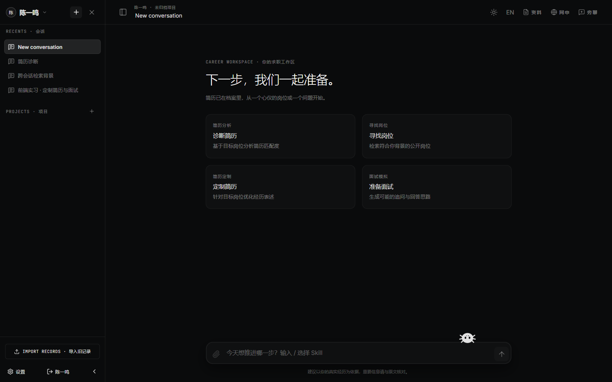
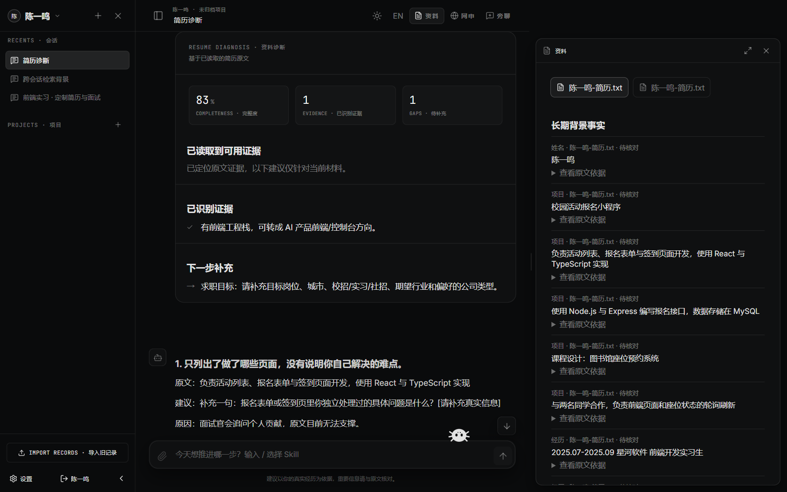
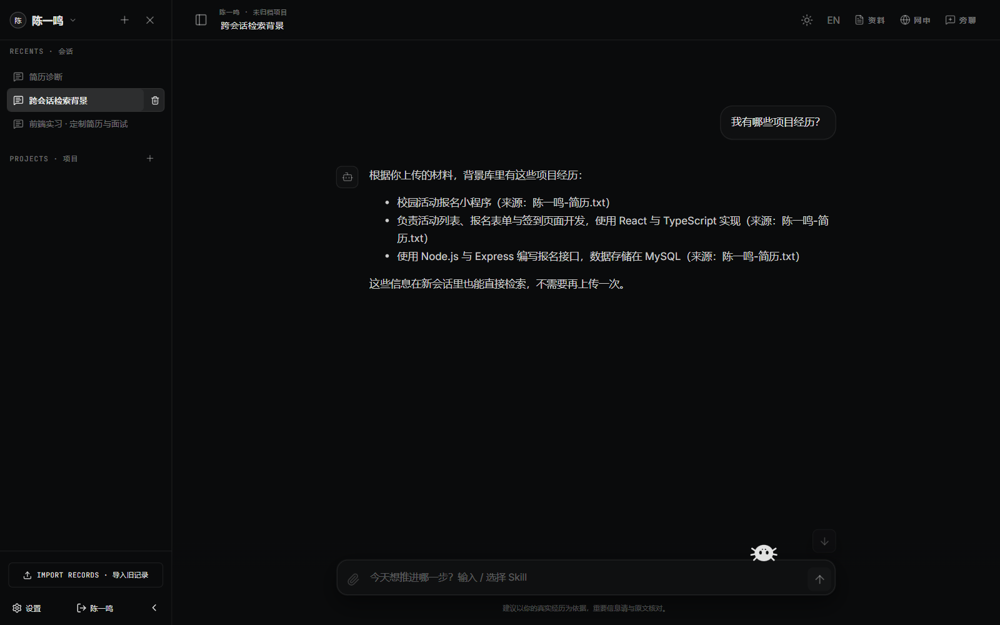
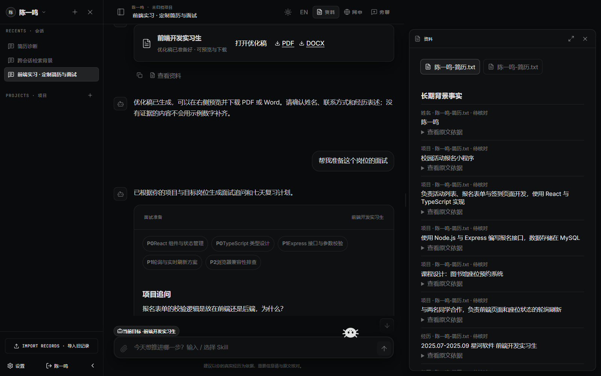
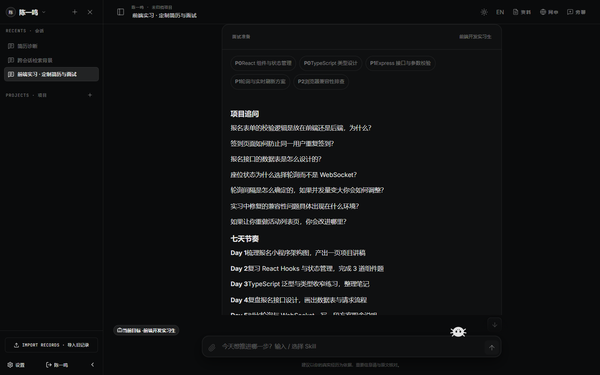
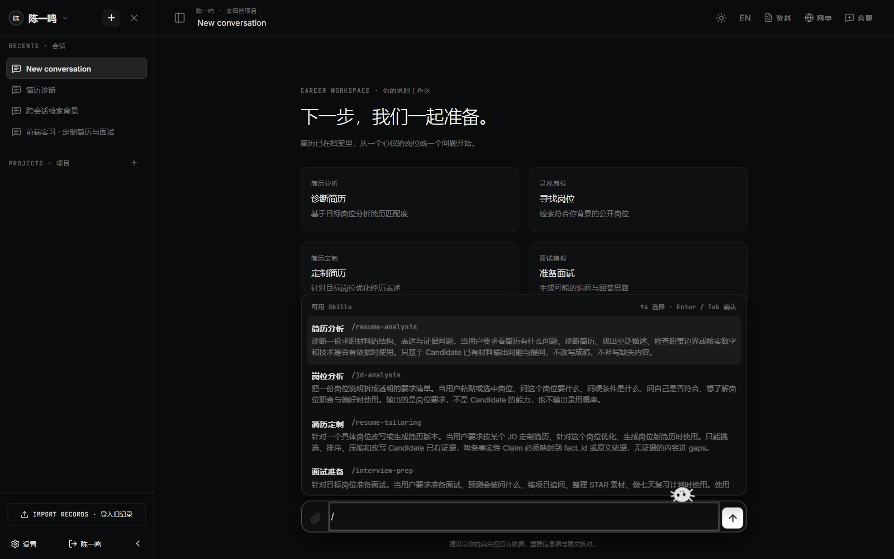
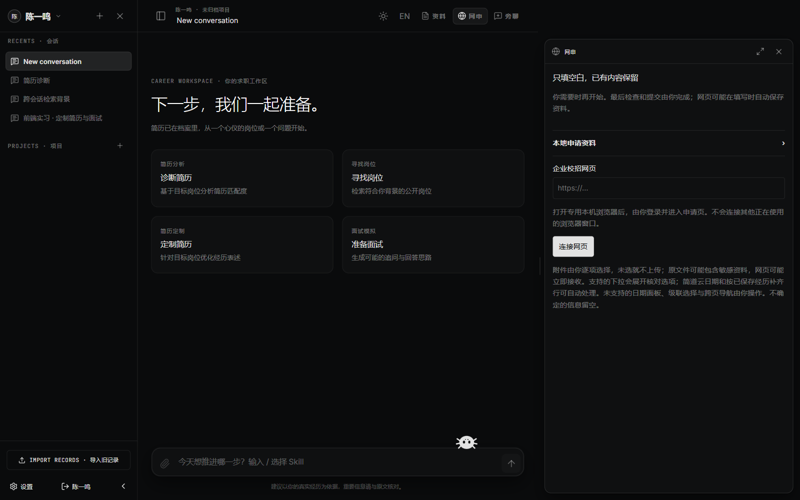

换一个 AI 工具、开一个新对话、投一个新岗位，就要把教育背景、项目、实习重新讲一遍。现有工具大多以"一份简历"为中心，不会记住人。
大模型为了贴合 JD，会凭空加上候选人没用过的技术、没做过的指标、被放大的职责。多数产品靠 Prompt 里一句"不要编造"来约束，无法保证。
大厂官网招聘接口各不相同，聚合站文本常常不完整；企业网申长表单动辄几十个字段，同样的信息一遍遍手填。
开源的求职 Agent/Skill 大多要求用户会用 Claude Code、Codex 等编程工具，非技术背景的应届生很难用起来。
| 原则 | 含义 |
|---|---|
| Candidate-first | 候选人是长期实体，对话只是工作线程；一位用户可以管理多位候选人。 |
| Evidence-first | 任何事实性的职业陈述都必须有来源，没有证据的内容不能进入最终简历。 |
| Agent / SDK-first | 通用 Agent 能力（循环、会话、Skill、Tool、权限）交给 Claude Agent SDK，不重复造轮子。 |
| 代码保证，而非 Prompt 保证 | 数据隔离、工具授权、事实核验都由确定性代码完成，模型无法绕过。 |
| 如实失败 | 工具失败绝不包装成成功；聚合站岗位文本不等同于完整官方 JD，缺失要求标记为"未核实"。 |
支持 PDF / DOCX / TXT / Markdown / 粘贴文本。保留原件、逐页文字、识别方式与状态；扫描件自动走本机 OCR（Windows.Media.Ocr / Tesseract）或多模态转录。抽取出教育、经历、项目、技能、成果、指标、求职偏好等结构化事实，每条都带原文引用与页码。
resume-analysis 简历诊断、jd-analysis JD 拆解、resume-tailoring 定制简历、interview-prep 面试准备。工作区输入 / 即可选择，也可由 Agent 自主调用。另有 resume-layout 版式与 application-form 网申两个扩展 Skill。
每条简历陈述持久化对应的 fact_ids；导出永远读取已核验、已持久化的简历版本。提供项目型、工作型、简洁型等原创单栏版式，中文排版可读，内容自然分页而不是压缩删减，支持真实 PDF 页面预览。
接入腾讯、字节跳动、华为、小米等 14 条大厂官方招聘接口、Hiring Radar 与国家大学生就业服务平台。每条岗位保留来源 URL、抓取时间与有效状态，并做届别 / 学历等资格判断。
在本机专用浏览器中扫描企业校招页面，按本地申请资料只填空白字段，保留已有内容；不确定的字段留待确认而不是猜；最终检查与提交由本人完成。
Electron 打包的 Windows 安装包，内置 Python 与导出依赖；可选云同步。支持 Claude、MiniMax、BigModel 及任意 Anthropic 兼容端点作为主 Agent 模型。
以下截图来自真实运行的 Loomi（服务端、数据库、文档解析、事实抽取、检索、Claim 核验与界面均为真实代码），候选人"陈一鸣"为虚构演示数据；为保证可复现，模型回复使用固定脚本。






Loomi 刻意保持架构精简：一个主 Agent、一套长期候选人知识库、少量 Skill / Tool，以及围绕它们的确定性校验。
知识库由两部分组成：结构化事实（Candidate Fact）与文档切片（Document Chunk）。每条事实都携带完整出处：
| 字段 | 作用 |
|---|---|
source_type / source_id | 来自哪份文档，或来自用户在对话中的明确陈述（user_asserted） |
source_quote / source_page | 原文引用与页码位置，可在"资料"卡片中高亮回原文 |
confidence / status | verified / user_asserted / disputed / disabled；来源冲突时不静默覆盖 |
只有两种记忆：SDK 会话 / 对话历史负责单个对话的短期连续性；候选人知识库负责跨对话的长期背景。Agent 生成的文字、JD 中的要求永远不会自动变成候选人事实。
Agent 不会拿到整个知识库，只通过 search_candidate_knowledge 获得与当前任务相关的有限证据。中文文本在默认分词无法切分时回退到汉字二元组；未配置向量模型时自动退回 BM25，功能不中断。
定制简历中的每条事实性陈述都要映射到候选人事实，核验至少拦截五类问题：未出现过的技术、无依据的数字或结果、夸大的职责范围、把 JD 要求抄进候选人经历、跨候选人的数据污染。没有证据的 Claim 不能进入最终简历；导出只读取持久化的已核验版本。
user_id + candidate_id 过滤，在执行前校验；越权直接抛错，而非静默收窄。user_id + candidate_id + conversation_id 哈希得到，配置目录相互隔离。PreToolUse Hook 只放行精确注册的 MCP 工具与第一方 Skill；MCP Schema 校验拒绝非法参数，并剥离模型伪造的候选人选择器。officialJobSources.js 是官方招聘源的唯一登记处，每个来源带有专门适配器（JSON API / 内嵌 HTML / 未适配）。来源状态区分已同步 / 可达 / 未适配 / 失败，避免把"还没接入"误报为"没有岗位"；岗位的标题、URL 与域名必须都属于声明的官方来源，聚合站中缺失的要求保持"未核实"。
| 层次 | 技术 |
|---|---|
| 桌面端 | Electron 42、electron-builder（NSIS 安装包，内置 Python 运行时） |
| 前端 | React、Vite、assistant-ui、lucide-react；中英双语 i18n；深浅色主题 |
| 服务端 | Node.js 22、Express 5、multer、zod 参数校验、nodemailer（找回密码） |
| Agent | @anthropic-ai/claude-agent-sdk（锁定版本）；Claude / MiniMax / BigModel / Anthropic 兼容端点 |
| 检索 | SQLite FTS5 + BM25、汉字二元组分词回退；可选 Ollama / 千问 / Google Embedding 向量检索 |
| 文档 | pdf-parse、mammoth、Windows.Media.Ocr / Tesseract、多模态转录；reportlab、python-docx 导出 |
| 网申 | playwright-core 驱动本机专用浏览器；支持同源 iframe、简道云控件、多行记录与附件选择 |
| 指标 | 说明 |
|---|---|
| 自动化测试 | 77 个测试文件，覆盖候选人隔离、检索、事实抽取、JD 硬性要求、Claim 核验、会话续接、Skill 使用、工具失败如实上报等 Golden Case |
| 离线 / 联网分离 | npm test 全离线运行；真实模型、真实 Embedding、官方岗位源对账、完整流程验收、工作区 UI 自动化单独运行 |
| 端到端验收 | 创建候选人 → 上传 → 粘贴 JD → 定制 → 带证据导出 PDF / DOCX 的完整场景；真实模型的 Skill 路由冒烟测试 |
| 可追踪性 | 每个任务可按 user_id、candidate_id、conversation_id、agent_session_id、工具调用、检索查询、命中事实、错误与产物追踪 |
上传简历和课程项目报告，Loomi 自动建立背景库。面对每一个目标岗位，只需粘贴 JD：Agent 拆解硬性要求与资格限制，检索匹配证据，生成只包含真实经历的定制简历，并导出 PDF / DOCX 直接投递。
用户在某次对话中补充"这个项目里我负责了接口设计和压测"，确认后以 user_asserted 写入背景库。之后任何新对话、任何岗位都能检索到这条经历，无需重复上传或解释。
基于目标 JD 与候选人证据，生成可能的追问链、STAR 故事准备、证据薄弱点预警和岗位相关复习主题，帮助候选人避免在面试中"被问穿"。
打开企业校招长表单，Loomi 在本机浏览器中按本地资料只填写空白字段，已有内容（包括 0 和"否"）全部保留，不确定字段留待用户确认。在验收用的单页招聘表单上，54 个合成内容字段全部匹配正确，提交仍由本人完成。
从 14 条大厂官方接口和国家大学生就业服务平台检索岗位，结合届别、学历等条件判断资格，并标明每条岗位的来源与抓取时间，帮助应届生把精力集中在真正可投的机会上。
多候选人严格隔离的能力天然适合高校就业中心、就业指导老师和求职辅导机构：一位老师可以为多名学生分别维护背景库，彼此数据互不可见。
| 用户 | 核心诉求 | Loomi 提供 |
|---|---|---|
| 国内应届生 / 实习求职者 | 岗位多、网申多、简历要反复改 | 背景库 + 定制简历 + 网申填表 |
| 非技术背景求职者 | 想用 Agent 但不会用编程工具 | 安装即用的桌面应用 |
| 重视真实性的求职者 | 担心 AI 写出经不起追问的内容 | 逐条证据映射与核验 |
| 就业指导老师 / 机构 | 同时服务多名学生 | 多候选人隔离与长期档案 |
候选人事实带完整出处，每条简历 Claim 持久化 fact_ids，导出只读已核验版本。"不编造"从模型的自觉变成了系统的保证。
以候选人为长期实体，结构化事实 + BM25 + 向量混合检索，跨对话复用；支持用户在对话中补充事实，并严格区分"用户陈述"与"模型推断"。
主 Agent 直接运行在 Claude Agent SDK 的 Agent 循环上，会话续接、Skill、MCP 工具、Hook 权限全部复用 SDK；Loomi 只专注求职领域的知识、工具与校验。求职方法论以 Skill 形式按需加载，常驻系统提示保持精简。
14 条大厂官方招聘接口的专用适配器、国家大学生就业服务平台、届别 / 学历资格判断、企业长表单网申（含简道云控件、多行记录、附件选择）。
工具失败绝不包装成成功；PDF 部分页面识别失败时不声称"已完整审阅"；聚合站岗位标记为"未核实"；岗位源区分"未接入"与"无岗位"；网申只填空白、不猜测、不代替用户提交。
career-ops、ASu-skills 等同类 Agent 工作流需要用户熟悉 Claude Code / Codex；Loomi 打包为内置 Python 运行时的 Windows 安装包，非技术用户也能直接使用，并支持多家国内模型与任意 Anthropic 兼容端点。
后续功能都将复用"候选人知识库 + Skill + Tool + Claude Agent SDK"，不新增大脑或重复的运行时层。
| 方向 | 内容 |
|---|---|
| 投递看板 | 把目标岗位、简历版本与网申结果串成一条记录，跟踪测评 / 笔试 / 面试 / offer 状态与截止日；状态只由用户确认或网申回执证实。 |
| 岗位匹配与投递建议 | 在岗位列表展示匹配度，硬门槛不满足直接标出，每个匹配点或差距都可点开查看证据，给出"建议投 / 可冲 / 不建议"。 |
| STAR 故事库 + 模拟面试 | 故事作为一类绑定证据的候选人事实；友好 / 高压两种模拟面试模式，结束后评分并标出"被问穿点"。 |
| 三分钟首次体验 | 内置默认模型额度，上传简历后立即展示带出处的背景库与诊断，降低配置门槛。 |
代码仓库：https://github.com/tbszz/Loomi · 详细设计见仓库中的 PRD.md、ARCHITECTURE.md、DEVELOPMENT_RULES.md 与 docs/ 目录。